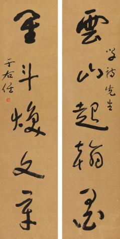
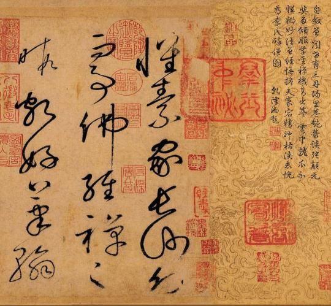

草书是汉字的一种字体，有广狭二义。广义的，不论年代，凡写的潦草的字都算作为草书。狭义的，即作为一种特定的字体，形成于汉代，是为了书写简便在隶书基础上演变出来的。大约从东晋时代开始，为了跟当时的新体草书相区别。 把汉代的草书称作章草。新体草书相对而言称作今草，其又分大草（也称狂草）和小草，在狂乱中觉得优美。正如李志敏所说：“临于池，酌于理，师于物，得于心，悟于象，然后始入草书妙境。 ”
早期草书是跟隶书平行的书体，一般称为隶草，实际上夹杂了一些篆草的形体。初期的草书，打破隶书方整规矩严谨，是一种草率的写法。称为“章草”。章草是早期限草书和汉隶相融的雅化草体，波挑鲜明，笔画钩连呈“波”形，字字独立，字形遍方，笔带横势 。章草在汉魏之际最为盛行，后至元朝方复兴，蜕变于明朝。
汉末，章草进一步“草化”，脱去隶书笔画行迹，上下字之间笔势牵连相通，偏旁部首也做了简化和互借，称为“今草”。今草，是章草去尽波挑而演变成的，今草书体自魏晋后盛行不衰。到了唐代，今草写的更加放纵，笔势连绵环绕，字形奇 变百出，称为“狂草”，亦名大草。
到了现代，草书的审美价值远远超越了其实用价值。 草书是按一定规律将字的点划连字，结构简省，偏旁假借，并不是随心所欲的乱写。草书符号的 主要特征之一是笔画带钩连，包括上下钩连和左右钩连。隶化笔法的横势倾向，为左右钩连的草化提供了依据。章草笔法用“一”形，今草笔法用“s”形。这是两者的根本区别。运笔放纵、点画狼藉的又称大草或狂草。
草书在唐代出现了以张旭、怀素为代表的狂草，成为完全脱离实用的艺术创作.狂草亦称大草，笔意奔放，体势连绵，如唐朝张旭《千文断碑》、《古诗四道》，怀素僧《自叙帖》等等，，张旭史称“草圣”，孙过庭《书谱》字字区别，不相连接，而笔意活泼、秀媚。“大草”与“小草”相对称，大草纯用草法，难以辨认，张旭、怀素善此，其字一笔而成，偶有不连，而血脉不断。清朝冯班《钝印书要》谈学草书法云：小草学献之、大草学羲之，狂草学张旭不如学怀素。怀素的草字容易辨认，字迹清瘦见形，字字相连处亦落笔清晰易临。张旭字形变化繁多，常一笔数字，隔行之间气势不断，不易辨认，形成一种独特的风格，韩愈《送高闲上人序》中提到张旭草书以“喜怒窘穷，忧悲愉佚，怨恨、思慕、酣醉、无聊、不平，而有动于心，必于草书挥毫发之”，故学张旭难。